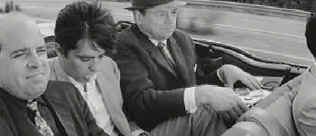

| Joy House (Les Felins)/B, C+ |
| Image/1964/91/ANA 2.35/BW |
The French seem to have a patent on clever cat and mouse suspense dramas. Maybe it's the settings on the coast of France that make for perfect suspense ambiance; but whatever the reason, the pleasures extracted from these tightly played out films are universal.
 |
|
A nice ride through the French countryside. ©Image |
Joy House
(Les Felins), directed by veteran suspense master Rene
Clement (Purple Noon), stars out with crisp Film Noir strokes. A
powerful American man in a business suit questions his wife
about the affair she had with a younger man. He walks the hotel
rooms with her and then orders his henchmen to Europe to bring
him the head of the offending gigolo.
Marc is working his magic in Paris when
he is quickly trapped like a rat in his hotel room by the trio
of hunters. While one works him over in a hot bath, another
takes photographs and the third bandies a tape recorder at the
gasping Marc. They want to record the evidence of his
transgressions and bring this back to the man in the States.
In a brilliantly filmed sequence, Marc
escapes before the men can finish their job. Hiding in a church
with a group of homeless and hungry, Marc is spotted by two
attractive women in black who dole out food to the hungry. The
film takes a delicious and unexpected turn as Marc becomes the
chauffer to the recently widowed good-looking blonde. More than
meets the eye is going on and Clement takes special delight in
the twists and turns of this confined thriller.
Filmed in widescreen black and white, the
stark images enhance the restricted ambiance. Add a nifty score
by Lalo Schifrin and Joy House keeps coming at you with
surprises.
Alain Delon is the perfect pretty boy
gigolo for Marc. Lola Albright is the lady of the house with a
winning smile and black widow's heart and Jane Fonda plays her
cousin, hungry for money and hungry for love.
The widescreen anamorphic 2.35 black
and white images are transferred from relatively clean elements.
A few scratches and bad splices are in evidence, but they are
minor and rarely intrude on the image. Contrast range is
comfortable and shadow detail reveals the full intent of the
director. The image is sharp with no undue edge enhancement
except in some peak transitions. The mono sound is marred by a
hum throughout. You have to work to drown out the drone. Joy
House is presented in English, which seems to be the
language it was filmed in, or French, with no subtitles.

Check out these DVD recommendations from the Films on Disc DVD Review Archive. New releases are constantly in our face, but catalog gems should not be forgotten.
Selections from the feature archive include articles on Akira Kurosawa, Frank Darabont, Blonde Bimbos, Hollywood Street Gangs, or Vietnam: The Hollywood Pariah, and many more....

Film noir: The phrase hangs awkwardly on the tongue, shadowy images peek out from behind half-closed doors. Click on the Noir and Noir Again symbol for a look into the dark spaces of Hollywood's revisiting of film noir.

The Movie Poster Archive include extensive poster images from the films of stars like Susan Hayward, Kirk Douglas, Katharine Hepburn and many more. This month's featured star is Burt Lancaster.

 Gary
Morris's insightful publication Bright Lights Film Journal
turns the celluloid in films from a unique perspective. Click on the image above for more pure movie views.
Gary
Morris's insightful publication Bright Lights Film Journal
turns the celluloid in films from a unique perspective. Click on the image above for more pure movie views.

Fine reviews, features and news on
DVD. The
Big Picture has been doing DVD as long as anyone.
Jeff McNeal and Bob Banka feed on a steady diet of DVDs.

Doug Pratt's been doing almost longer than anyone in the business,
reviewing laser discs, that is, and now DVDs too. The venerable
Laserdisc Newsletter has been publishing since 1984. Pratt probably
has a large enough stock of laser discs in his house to build a
DVD-proof bomb shelter. Check out his on-line reviews at DVDlaser.com.
shopforacomputer.com
Offering
home theater and DVD links, photos, product reviews, on-line
purchasing information and top-brand comparison shopping.

A hallmark of Film Threat Magazine is irreverence. The transition
from print to the Internet leaves the acid base in tact. Humorous
criticism with a vengeance.

Cinemedia
is the largest film and media directory with over 25,000
links.